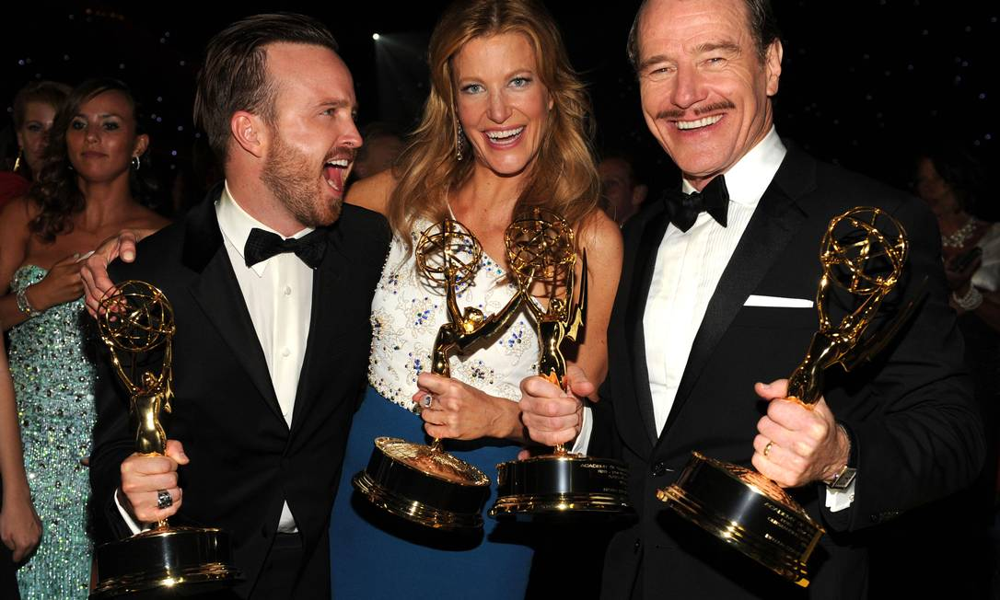
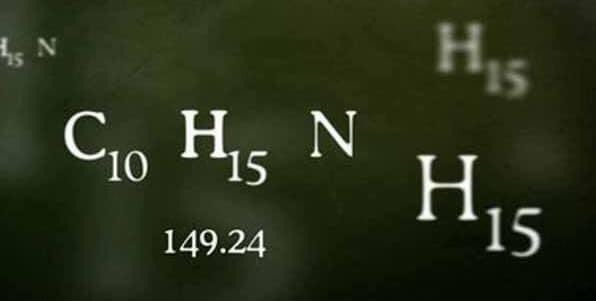
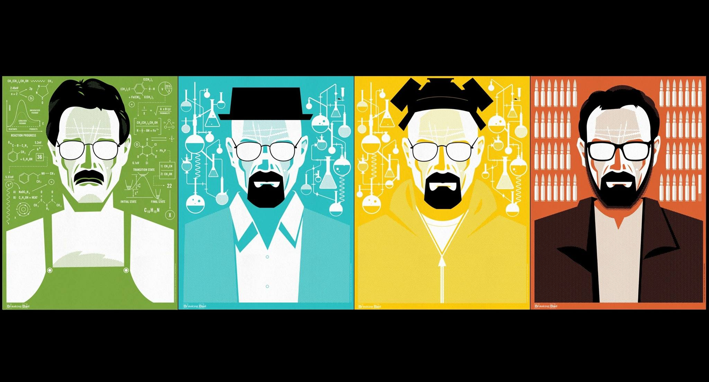

Sinopse
Breaking Bad é uma série de televisão americana criada e produzida por Vince Gilligan. Ela retrata a vida do químico Walter White, um homem brilhante frustrado em dar aulas para adolescentes do ensino médio enquanto lida com um filho sofrendo de paralisia cerebral, uma esposa grávida e dívidas intermináveis. White, então, é diagnosticado com um câncer no pulmão - o que o leva a sofrer um colapso emocional e abraçar uma vida de crimes para pagar suas dívidas hospitalares e dar uma boa vida aos seus filhos. Walter resolve produzir metanfetamina de alta pureza com seu ex-aluno, Jesse Pinkman.

Mais sobre a série
Breaking Bad se passa em Albuquerque, Novo México, e gira em torno das escolhas de seu protagonista, as quais o levam a uma intensa, dolorosa e inevitável transformação. Amplamente considerada como uma das melhores séries da história, ao seu final, foi um dos programas da televisão a cabo mais assistidos nos Estados Unidos, recebendo inúmeros prémios, incluindo dezesseis Primetime Emmy Awards, oito Satellite Awards, dois Globos de Ouro e um Prémio Escolha Popular. Em 2014, entrou para o Livro dos Recordes como o seriado mais bem avaliado de todos os tempos pela crítica.
Curiosidades
Elementos Químicos
Na introdução da série, é mostrado várias vezes a fórmula química C10H15N e o número 149.24. Esses números representam, respectivamente, a fórmula química e a massa molar da metanfetamina, droga principal da série.
Teoria das Cores
Breaking Bad possui uma forte ligação com as cores durante as cenas. O criador da série, Vince Gilligan, fez com que cada cor trouxe-se um sentimento ou emoção pras cenas e personagens, como o Walter White, o branco é a junção de todas as cores dando a entender que o personagem irá passar por diversas emoções durante a série. Uma cor muito presente na série é a cor verde, muito utilizada pelo Walter, que representa a ganância e o dinheiro.
